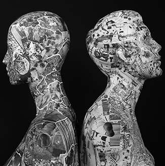
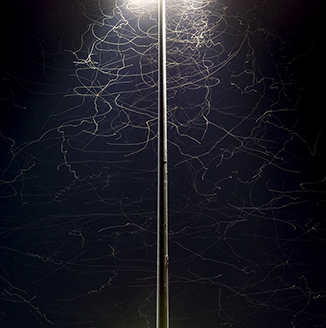
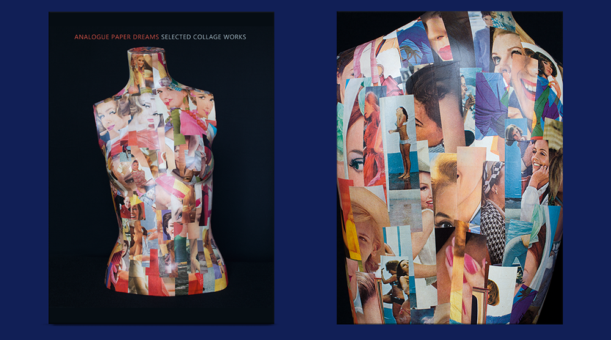
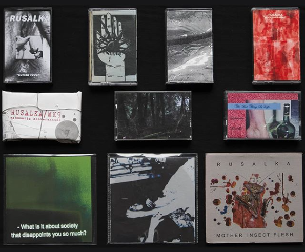

The online store
has moved
to a new location.

Brandon Auger dang. Influencer
Kate Rissiek Moss Harvest Rhoda
Violent Shogun Windshear
Saturday, June 27, 2026
The Cobb Lobby 5562 Sackville Street
Doors 8:00pm Show 8:30pm
   
Kate Rissiek - Dark Energy Era Cassette 2025
availble from the label Throne Heap Records or my shop
Edition of 80 copies
Kate Rissiek - Wave Expanse LP
Released by Buried in slag and debris - Edition of 218
Kate Rissiek -
Decayed Signals LP
Released by Virtues Label
Official music video from the new Album Decayed Signals.
Available now on Virtues Label and from the store here
Analogue Paper Dreams - Selected Collage Work by Kate Rissiek
8 x 10 full color 86 page perfect bound book
Includes 68 collages created over the past 15 years
WCN Podcast #12 Kate Rissiek of RUSALKA
on sound sources, touring, Vancouver noise, her visual art
Bandcamp digital downloads available.
Recordings from 2008 to the present.